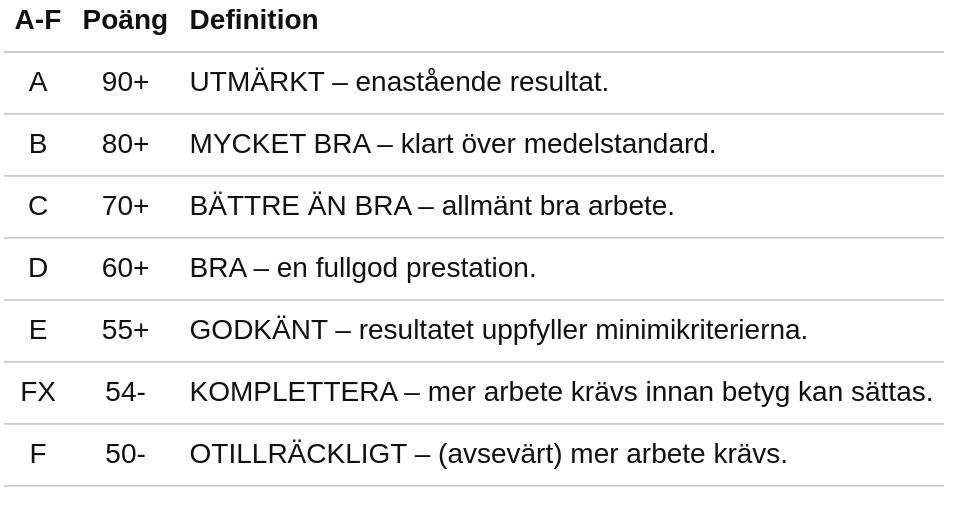

<!doctype html>
<html class="theme-5">
<meta charset="utf-8" />
<link href="../html-slideshow.bundle.min.css" rel="stylesheet" />
<link href="../style.css" rel="stylesheet" />
<script src="https://dbwebb.se/cdn/js/html-slideshow_v1.1.0.bundle.min.js"></script>

<title>Kursen databas</title>

<script data-role="slide" type="text/html" data-markdown class="titlepage center">
# Programmera i databasen
## Funktioner
### Mikael Roos
</script>


<script data-role="slide" data-markdown type="text/html">
# Agenda

* Funktioner

<p class="footnote">Bygger på delar av artikeln https://dbwebb.se/kunskap/egen-definierade-funktioner-i-databas.</p>

</script>


<script data-role="slide" data-markdown type="text/html">
# Skapa funktioner i MySQL

* Två olika varianter
* User defined function (UDF)
    * Bygg funktionen i C++ och länka in till MySQL Server
* Lagras i databasen som en stored routine
    * CREATE/DROP/ALTER FUNCTION

</script>


<script data-role="slide" data-markdown type="text/html">
# User defined function (UDF)

* Extern kod som länkas in till databasservern
* Skriv i C++
* Kan operera på en rad eller flera
* Kan skapa aggregerande funktioner likt SUM()

</script>


<script data-role="slide" data-markdown type="text/html">
# Funktion som stored routine

* FUNCTION, liknande PROCEDURE, TRIGGER
* Kan använda compound statements
* Kan använda SQL mot andra tabeller
* Opererar mot en rad, ej aggregerande

</script>


<script data-role="slide" data-markdown type="text/html">
# Funktion som stored routine...

* Lagras i databasen som ett databasobjekt
* Bygg egen funktion liknande de inbyggda funktionerna
    * ABS(), CONCAT(), DATE_FORMAT() mfl
* CREATE/DROP/ALTER FUNCTION

</script>


<script data-role="slide" data-markdown type="text/html" class="titlepage center">
# Exempel på funktion
</script>


<script data-role="slide" data-markdown type="text/html">
# Tentan är rättad

* Resultaten ligger i databasen

```
CREATE TABLE exam
(
    `acronym` CHAR(4) PRIMARY KEY,
    `score` INTEGER
);

INSERT INTO exam
VALUES
    ('adam', 77),
    ('ubbe', 52),
    ('june', 49),
    ('john', 63),
    ('meta', 97),
    ('siva', 88);
```

</script>


<script data-role="slide" data-markdown type="text/html">
# Resultaten

* Hur översätta resultat till betyg?

```
mysql> SELECT * FROM exam;
+---------+-------+
| acronym | score |
+---------+-------+
| adam    |    77 |
| john    |    63 |
| june    |    49 |
| meta    |    97 |
| siva    |    88 |
| ubbe    |    52 |
+---------+-------+
```

</script>


<script data-role="slide" type="text/html" data-markdown class="center">
# Betygsskalan

<figure>

<figcaption>Poängen översätts till betyg enligt bilden.</figcaption>
</figure>

</script>


<script data-role="slide" data-markdown type="text/html">
# Exempel på funktion

* En funktion `grade(score)`
* Används i en SQL-sats för att bearbeta resultsetet

```
-- Funktion som översätter poängtalet till betyget
SELECT grade(score) AS Betyg FROM exam;
```

</script>


<script data-role="slide" data-markdown type="text/html">
# Använd funktion

```
SELECT grade(75) AS Betyg;

SELECT
    score AS Poäng,
    grade(score) AS Betyg
FROM exam;
```

<p class="footnote">Använd på samma sätt som en vanlig inbyggd funktion.</p>

</script>


<script data-role="slide" data-markdown type="text/html">
# Använd funktion

```
mysql> SELECT
    ->     *,
    ->     grade(score) AS 'grade'
    -> FROM exam
    -> ORDER BY grade;
+---------+-------+-------+
| acronym | score | grade |
+---------+-------+-------+
| meta    |    97 | A     |
| siva    |    88 | B     |
| adam    |    77 | C     |
| john    |    63 | D     |
| june    |    49 | F     |
| ubbe    |    52 | FX    |
+---------+-------+-------+
```

</script>


<script data-role="slide" data-markdown type="text/html">
# Använd Funktion

* Kan ta inkommande parametrar `IN`
* Returnerar ett värde, `RETURNS CHAR(2)`

```
SELECT score, grade(score) FROM exam;
```

<p class="footnote">Parametrar som OUT och INOUT är enbart för stored procedures.</p>

</script>


<script data-role="slide" data-markdown type="text/html">
# Definiera funktion

```
DROP FUNCTION IF EXISTS grade;
DELIMITER ;;

CREATE FUNCTION grade()
RETURNS CHAR(2)
BEGIN
    -- Statements
END;;

DELIMITER ;
```

<p class="footnote">Liknande konstruktion som stored procedure och triggers.</p>

</script>


<script data-role="slide" data-markdown type="text/html">
# Minsta möjliga funktion

```
CREATE FUNCTION grade()
RETURNS CHAR(2)
BEGIN
    RETURN 'Fx';
END;;
```

<p class="footnote">Funktion som returnerar ett värde.</p>

</script>


<script data-role="slide" data-markdown type="text/html">
# Inkommande argument

```
CREATE FUNCTION grade(
    score INTEGER
)
RETURNS CHAR(2)
BEGIN
    RETURN 'Fx';
END;;
```

<p class="footnote">Parametrar definieras med typ likt stored procedure och kolumner i tabell.</p>

</script>


<script data-role="slide" data-markdown type="text/html">
# Använd funktion

* Funktionen returnerar ett värde

```
SELECT
    score AS Poäng,
    grade(score) AS Betyg
FROM examination;
```

<p class="footnote">Det returnerade värdet blir en del av resultsetet för respektive rad.<br>Argumenten kan vara värde från tabellens kolumner.</p>

</script>


<script data-role="slide" data-markdown type="text/html">
# Compound statements

```
RETURNS CHAR(2)
BEGIN
    IF score >= 90 THEN
        RETURN 'A';
    ELSEIF score >= 80 THEN
        RETURN 'B';
    ELSEIF score >= 70 THEN
        RETURN 'C';
    ELSEIF score >= 60 THEN
        RETURN 'D';
    ELSEIF score >= 55 THEN
        RETURN 'E';
    ELSEIF score >= 50 THEN
        RETURN 'FX';
    END IF;
    RETURN 'F';
END;;
```

</script>


<script data-role="slide" data-markdown type="text/html">
# En funktion

```
mysql> SELECT
    ->     *,
    ->     grade(score) AS 'grade'
    -> FROM exam
    -> ORDER BY grade;
+---------+-------+-------+
| acronym | score | grade |
+---------+-------+-------+
| meta    |    97 | A     |
| siva    |    88 | B     |
| adam    |    77 | C     |
| john    |    63 | D     |
| june    |    49 | F     |
| ubbe    |    52 | FX    |
+---------+-------+-------+
```

</script>


<script data-role="slide" data-markdown type="text/html">
# Funktion karaktäristik

* `[NOT] DETERMINISTIC`
* `CONTAINS SQL | NO SQL | READS SQL DATA | MODIFIES SQL DATA`

<p class="footnote">Visa hur funktionen beteer sig, vilken karaktäristik den har.</p>

</script>


<script data-role="slide" data-markdown type="text/html">
# Funktion karaktäristik...

```
CREATE FUNCTION time_of_the_day()
RETURNS DATETIME
NOT DETERMINISTIC NO SQL
BEGIN
    RETURN NOW();
END
;;
```

<p class="footnote">En funktion som returnerar dagens datum är icke deterministisk och använder inte SQL.</p>

</script>


<script data-role="slide" data-markdown type="text/html">
# Sammanfatta

* Parametrar inkommande
* Returnerar ett värde
* Datatyper enligt kolumner i tabeller
* Compound statements
* Kan utföra SQL
* Karaktäristik

</script>


<script data-role="slide" data-markdown type="text/html">
# Administrera funktioner

```
-- Lista och visa de funktioner som finns
SHOW FUNCTION STATUS;

-- Visa specifik funktion
SHOW FUNCTION STATUS LIKE 'grade' \G

-- Alla funktioner i en databas
SHOW FUNCTION STATUS WHERE Db = 'dbwebb';

-- Visa koden för funktionen
SHOW CREATE FUNCTION grade \G
```

</script>


<script data-role="slide" data-markdown type="text/html">
# Varför funktioner

* Snygga till koden
* Återanvänd komplicerade konstruktioner
* DRY (Do not Repeat Yourself)
* Funktionen kan även modifiera tabeller och ställa SQL frågor (komplexa funktioner)

</script>


<script data-role="slide" data-markdown type="text/html" class="titlepage center">
# Slut
</script>


<script data-role="slide" data-markdown type="text/html">
<!-- empty slide by intention -->
</script>
